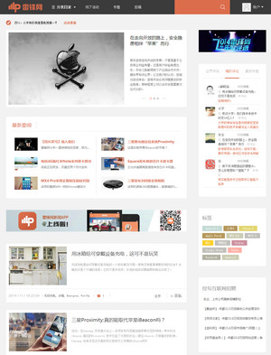

集分页拖动加载、边栏滚动时跟随屏幕等流行元素于一体
通过对大部分主流网站的研究，我发现一个网站要吸引读者，图片是必不可少的，如果一个网站全部是文字，没有图片，除非它是一个小说文学网站，否则根本无法长期吸引读者。几乎所有著名的博客形式的网站，都采用了图片标题列表的形式。

上面三张图片分布来自雷锋网、钛媒体、36kr，它们的布局虽有不同，但都是以图片标题列表的形式呈现。无一例外，包括“人人都是产品经理”等一些网站都采用这种形式。
除了图片标题列表之外，分页拖动加载（页面拉到底部的时候，自动加载下一页的内容）也成为标配，没有这个功能，网站也显得有点次。GD中不仅加入了这个功能，而且功能更加强大，你可以在后台设置拖动加载几个页面后停止拖动加载，重新显示翻页导航，防止读者看着太累。
边栏滚动也是非常流行的，当读者往下拉屏幕的时候，边栏的某一个小区域可以停止往上滚动，停留在屏幕中，从而减少空间浪费，增加某些内容的曝光率。
GD也学习了这种流行方式。图片的延时加载我没有默认开放，虽然往下拖屏的时候图片渐现的效果感觉挺高端的，但是我发现那是人家那些图片响应速度很快的网站才能用的，我们普通的网站图片要加载2-3秒，如果读者稍微拖的快一点，就会发现一片空白，因此我默认关闭了这个功能，但是你可以轻松打开。
很多流行元素都被加入GD，你需要从各个细节去体会。